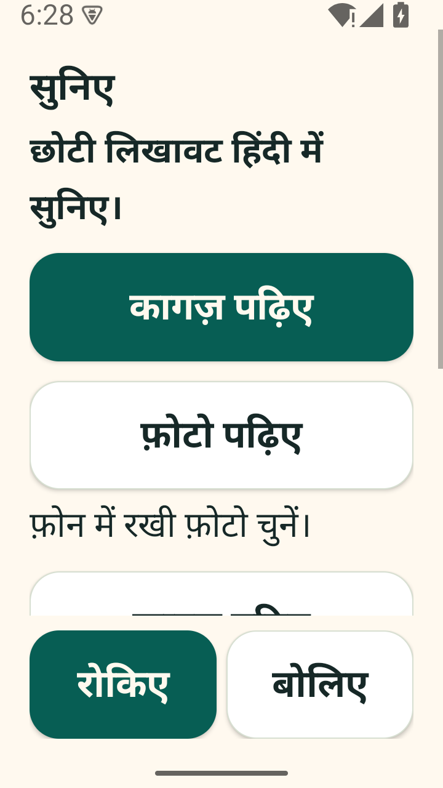
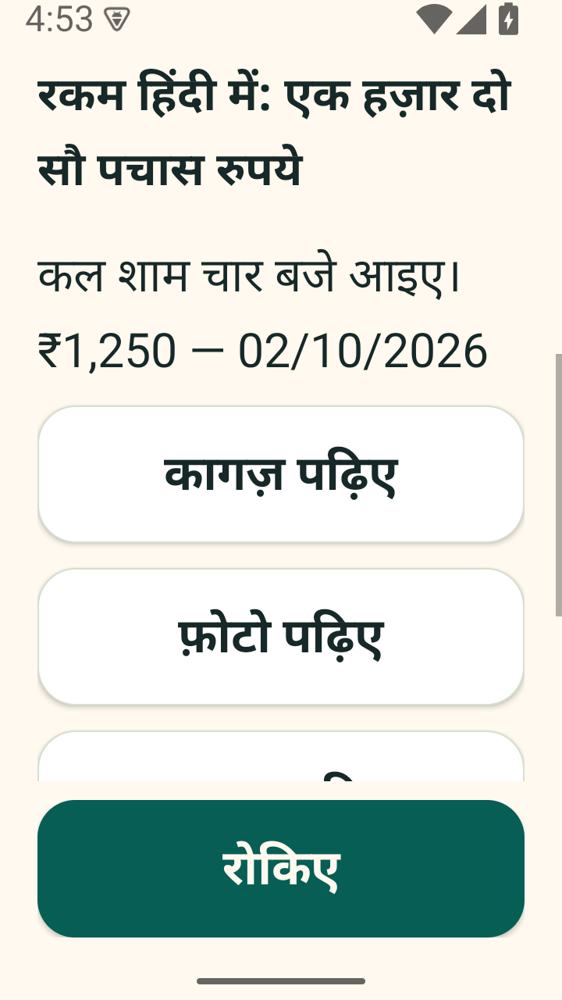

कागज़ सामने रखिए।
कागज़ पढ़िए से कैमरा खोलिए, या फ़ोन में रखी फ़ोटो चुनिए। अस्पष्ट लिखावट हो तो दोबारा साफ़ तस्वीर लें।
माँ-पापा को छोटे अक्षरों वाले मैसेज, फ़ोटो और कागज़ हिंदी में सुनने में मदद। बड़े बटन। अपनी गति। फिर सुनने और रोकने का नियंत्रण उनके हाथ में।
Android 11+ पायलट · पहली बार परिवार की मदद से सेटअप
दूर रहकर हर संदेश पढ़ नहीं पाता।
इसलिए माँ-पापा के लिए सुनिए बनाया। — हिमांशु

₹1,250 को सिर्फ़ अंक नहीं, हिंदी के शब्दों में सुनिए। मूल लिखावट साथ रहती है।
बिजली का बिल
₹1,250
बिजली का बिल ₹1,250 है।
अभ्यास का नमूनाएक हज़ार
दो सौ पचास रुपये।
सुनने के लिए बटन दबाएँ।
यह पहले से रिकॉर्ड किया नमूना है। ElevenLabs Raju की आवाज़; यहाँ कोई नया AI अनुरोध नहीं होता। रिकॉर्डिंग डाउनलोड करें
नमस्ते। बिजली का बिल एक हज़ार दो सौ पचास रुपये है। फिर सुनने के लिए फिर सुनिए दबाएँ।
जिस लिखावट को पढ़ना मुश्किल है, उसे सामने रखिए। सुनिए में आगे का कदम बड़े हिंदी बटन बताते हैं।

कागज़ पढ़िए से कैमरा खोलिए, या फ़ोन में रखी फ़ोटो चुनिए। अस्पष्ट लिखावट हो तो दोबारा साफ़ तस्वीर लें।
फ़ाइल पढ़िए से PDF खोलिए। Android के Share से पाठ, फ़ोटो या PDF सुनिए को भेजना भी एक रास्ता है।
फिर सुनिए से दोहराएँ। धीरे सुनिए से गति कम करें। लंबे पाठ में भी रोकिए बटन नीचे रहता है।
WhatsApp के लिए परिवार को पहले अनुमति और floating सुनिए बटन का सेटअप करना होगा। आपके फ़ोन पर इसका व्यवहार अलग से जाँचना ज़रूरी है।
82 सेकंड के पुराने पायलट में बिल, फ़ोटो, दो PDF पन्ने और रोकिए दिखते हैं। नमूने कृत्रिम हैं; WhatsApp हिस्सा सेटअप समझाता है।
सुनिए एक पायलट है। परिवार का सदस्य फ़ोन पर सेटअप करे, फिर साथ बैठकर एक आसान पाठ सुनें।
परिवार के लिए पूरा सेटअप गाइडऐप क्या पढ़ता है और कहाँ आवाज़ के लिए पाठ भेजता है, समझाएँ। फिर माता-पिता की सहमति से Android पायलट इंस्टॉल करें।
नया पाठ सुनाने के लिए इंटरनेट और परिवार की तैयार आवाज़ सेवा (authenticated backend) चाहिए। स्क्रीन पढ़ने की accessibility अनुमति केवल समझाकर दें।
आरामदायक आवाज़ में छोटा नमूना चलाएँ। रोकिए, फिर सुनिए और धीरे सुनिए साथ आज़माएँ। अपने फ़ोन पर रकम का उच्चारण भी जाँचें।
जो देखा और परखा है, उसे उसी सीमा में बताते हैं। अपने फ़ोन पर आज़माने से पहले ये बातें जान लें।
फ़ोटो से अक्षर पहचानना (OCR) गलत हो सकता है। ज़रूरी रकम, तारीख और दवा का लेबल किसी परिवार के सदस्य से जँचवाएँ। साफ़ तस्वीर माँगना सही पढ़ने की गारंटी नहीं है।
Gemma की आसान व्याख्याएँ प्रयोगात्मक और मूल पाठ से अलग हैं। उसका hosted मॉडल अभी जुड़ा नहीं है। Raju आवाज़ देता है; अर्थ तय नहीं करता।
नया पाठ सुनाने के लिए परिवार को आवाज़ की इंटरनेट सेवा तैयार करनी होगी। पहले से मिला Raju ऑडियो फिर सुनने और धीमे सुनने के लिए फ़ोन पर रह सकता है। फ़ोन पर रखे पाठ और ऑडियो को परिवार मिटा सकता है।
असली WhatsApp उपयोग, Redmi A4 पर अनुभव, हिंदी बोलकर आदेश देना और परिवार की सुनने की सहजता अलग परीक्षण चाहते हैं। इनका परिणाम यहाँ नहीं मानते।
| संस्करण | क्या मिलता है | सीमा |
|---|---|---|
| 0.2.0-elevenlabs | यहाँ लिंक किया सार्वजनिक debug APK | नया Raju-only पायलट; caregiver setup आवश्यक |
| 0.1 पायलट | पुराना रिकॉर्ड किया वीडियो; अलग Appetize cloud-emulator जाँच के लिए चुना गया APK | यह 0.2 की जाँच नहीं है; यहाँ नई cloud या परिवार-जाँच का परिणाम दावा नहीं है |
| 0.3.0-parent-ux | नए parent UX और backend सुधार का स्थानीय काम | अभी सार्वजनिक डाउनलोड में शामिल नहीं |
स्क्रीन पुराने emulator captures हैं, नए डाउनलोड का नया runtime test नहीं। वीडियो का provider audio अलग से मिलाया गया था, क्योंकि Android screenrecord ने device sound नहीं पकड़ा।
परिवार के सदस्य के लिए Android 11+ का debug पायलट। डाउनलोड के बाद परिवार का सदस्य सेटअप गाइड से आवाज़ का backend तैयार करे।
अलग caregiver export: तैयार रिकॉर्डिंग सुनाता है। Android ऐप से अलग है और नई आवाज़ नहीं बनाता।